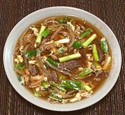

|
Bean Sprout Soup with BeefKorea - Kongnamul-guk | ||||
| Makes: Effort: Sched: DoAhead: |
8 cups ** 1 hrs Yes |
A quick and simple soup, one of many Korean bean sprout soups. This recipe is based on one published in Korea in 1974, but I've increased the beef from 4 ounces to 6. This soup is served with rice (medium grain). | |||
|
6 12 2 6 3 1 1 6 2 1/3 |
oz oz T t c c t t |
Beef, lean Bean Sprouts (1) Eggs Scallions Soy Sauce (2) Sesame Oil dark Water Water Sesame Salt (3) Pepper, black |
Prep - (15 min - but possibly 1 hr (see Note-1)
|